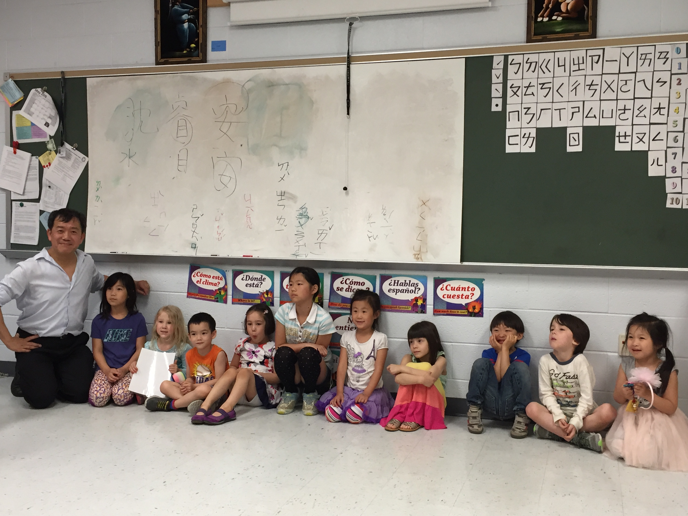

The Chinese Language School of Columbia (CLSC) is a non-political, non-sectarian, non-profit organization under 501(c)(3) that provides Chinese language and cultural instruction. The school admits interested individuals without regard to race, religion, national origin or citizenship status, sex, gender identity or expression.
CLSC was founded in 1975 in Howard County, Maryland. Since 2008, the school has been a proud partner of the Howard County Public School System. CLSC offers Chinese Language classes to native and non-native speakers with emphasis on speaking Mandarin and writing traditional Chinese characters. CLSC offers classes from foundational to advanced levels for anyone starting at 4 years old and up. Adult classes are also being planned to broaden our reach to provide practical Chinese skill to the wider community. Our classes are held for two hours each Sunday afternoon and also includes cultural activities such as introduction to Chinese yo-yo, poetry, calligraphy, Chinese cooking, and adult Tai-Chi.

Mission Statement
The Chinese Language School of Columbia (CSLC) is dedicated to educating students through a time-tested method of teaching and a rigorous curriculum. Emphasis is given to mastering essential Chinese language skills through interactive speech, writing and comprehension, and inspiring a lifelong interest, understanding, practice and respect of the Chinese culture.
CLSC seeks to develop students of high academic achievement, intellectual curiosity, and strong moral character within a supportive and diverse community. Our graduates possess the curiosity, and foundational knowledge in practical Chinese to pursue satisfying and impactful lives in today’s diverse global arena.
Goals and Objectives
The Chinese Language School of Columbia (CSLC) is dedicated to educating students through a time-tested method of teaching and a rigorous curriculum. There are two important goals:
To provide quality education to local children and adults who are interested in learning Chinese Mandarin and the Chinese culture.
To promote and increase awareness of values honored by the Chinese culture that are pertinent to a peaceful, diverse and prosperous world as well as the development of the individual.
In order to achieve these objectives, the school specifically delivers instruction through native Mandarin Chinese speakers in an interactive environment that promotes mastery of language skills with regards speech, writing and comprehension. Furthermore, the culture of the school inspires a lifelong interest, understanding, practice and respect of the Chinese culture – elements that all contribute to the wholesome development of an individual in a diverse global setting.